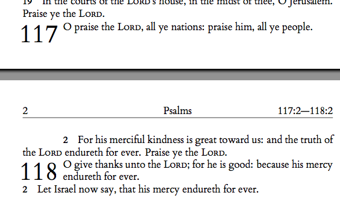

My custom lettrine and section causes some of my pagebreaks to ruin my layout. Please see the example of the output for the attached code run through XeLaTeX.

Verse 2 on the next page should actually be written next to the
bottom part of the 117 lettrine. Or else the whole chapter starting at
the 117 lettrine should be moved to the next page. But forcing \nopagebreak
before my sections breaks the page before the 118 lettrine as well,
which is wrong since chapter 117 is very short and can't be on it's own
page for obvious aesthetic reasons.
I have tried using \nopagebreak[n] but that just did not
give expected results. Is it possible to customise the priority more
specific for when TeX decides to do a page break?
\documentclass[paper=a5,pagesize=pdftex]{scrbook}
\usepackage[top=2cm,bottom=1.5cm, left=1.5cm, right=1.5cm]{geometry}
\usepackage[pagestyles]{titlesec}
\usepackage{lettrine}
\usepackage{xltxtra}
\usepackage{etoolbox}
\usepackage{setspace}
\renewcommand{\thesection}{\arabic{section}}
\renewcommand{\thesubsection}{\arabic{subsection}}
\defaultfontfeatures{Mapping=tex-text}
\setmainfont{Cardo}
% definition of the page style with required headers
\newpagestyle{Biblestyle}{
\setheadrule{.02pt}
\sethead[\thepage][\chaptertitle][\firsttitlemarks\thesection:\ifthesubsection{\firsttitlemarks\thesubsection}{1}---\bottitlemarks\thesection:\bottitlemarks\thesubsection]{\firsttitlemarks\thesection:\ifthesubsection{\firsttitlemarks\thesubsection}{1}---\bottitlemarks\thesection:\bottitlemarks\thesubsection}{\chaptertitle}{\thepage}
}
% sets the marks to be used (section and subsection)
\setmarks{section}{subsection}
\newlength\howwide
\newcommand\defhowwide{
\ifnumless{\value{section}}{99}{\ifnumgreater{\value{section}}{8}{\setlength{\howwide}{2.5em}}{\setlength{\howwide}{1em}}}{\ifnumgreater{\value{section}}{98}{\setlength{\howwide}{3.5em}}{\setlength{\howwide}{2.5em}}}
}
% sections and subsections formatting
\titleformat{\section}{}{\lettrine{\thesection}}{0em}{}[\vskip-1\baselineskip]
\titleformat{\subsection}[runin]{\small\bfseries}{\thesubsection}{1em}{}
\titlespacing{\section}{\howwide}{-1pt}{0pt}
\titlespacing{\subsection}{0pt}{0pt}{1em}
\setlength{\parindent}{0pt}
\newlength\NumLen
\newlength\LinLen
% indents one line of text. Indentation= width of section number + 1em
\newcommand\IndOne{%
\setlength\NumLen{\howwide}
\addtolength\NumLen{0.5em}
\setlength\LinLen{\dimexpr\textwidth-\NumLen}%\the\NumLen\the\LinLen
\parshape 2 \NumLen \LinLen 0pt \textwidth}
% indents two lines of text. Indentation= width of section number + 1em
\newcommand\IndTwo{%
\setlength\NumLen{\howwide}
\addtolength\NumLen{0.5em}
\setlength\LinLen{\dimexpr\textwidth-\NumLen}%\the\NumLen\the\LinLen
\parshape 3 \NumLen \LinLen \NumLen \LinLen 0pt \textwidth}
\usepackage[none]{hyphenat}
\sloppy
\begin{document}
\frontmatter
\mainmatter
\pagestyle{Biblestyle}
\newlength{\myIndent}
\begin{center}
THE BOOK OF\\
\vspace{0.15cm}\textbf{\Huge{PSALMS}}\vspace{0.00cm}\\
\end{center}
\renewcommand{\chaptertitle}{Psalms}
\setcounter{section}{115}
%\pdfbookmark[1]{116}{19O116}
\defhowwide
\section{}
\settowidth{\myIndent}
{\IndOne I love the \textsc{Lord}, because he hath heard my voice and my supplications.}
\ifdimless{\the\myIndent}
{\textwidth-\howwide}
{\IndOne I love the \textsc{Lord}, because he hath heard my voice and my supplications. \stepcounter{subsection}
\subsection{} \IndOne Because he hath inclined his ear unto me, therefore will I call upon him as long as I live.}
{\IndTwo I love the \textsc{Lord}, because he hath heard my voice and my supplications. \stepcounter{subsection} \subsection{} Because he hath inclined his ear unto me, therefore will I call upon him as long as I live.}
\subsection{} The sorrows of death compassed me, and the pains of hell gat hold upon me: I found trouble and sorrow.
\subsection{} Then called I upon the name of the \textsc{Lord}; O \textsc{Lord}, I beseech thee, deliver my soul.
\subsection{} Gracious is the \textsc{Lord}, and righteous; yea, our God is merciful.
\subsection{} The \textsc{Lord} preserveth the simple: I was brought low, and he helped me.
\subsection{} Return unto thy rest, O my soul; for the \textsc{Lord} hath dealt bountifully with thee.
\subsection{} For thou hast delivered my soul from death, mine eyes from tears, and my feet from falling.
\subsection{} I will walk before the \textsc{Lord} in the land of the living.
\subsection{} I believed, therefore have I spoken: I was greatly afflicted:
\subsection{} I said in my haste, All men are liars.
\subsection{} What shall I render unto the \textsc{Lord} for all his benefits toward me?
\subsection{} I will take the cup of salvation, and call upon the name of the \textsc{Lord}.
\subsection{} I will pay my vows unto the \textsc{Lord} now in the presence of all his people.
\subsection{} Precious in the sight of the \textsc{Lord} is the death of his saints.
\subsection{} O \textsc{Lord}, truly I am thy servant; I am thy servant, and the son of thine handmaid: thou hast loosed my bonds.
\subsection{} I will offer to thee the sacrifice of thanksgiving, and will call upon the name of the \textsc{Lord}.
\subsection{} I will pay my vows unto the \textsc{Lord} now in the presence of all his people,
\subsection{} In the courts of the \textsc{Lord}'s house, in the midst of thee, O Jerusalem. Praise ye the \textsc{Lord}.
%\pdfbookmark[1]{117}{19O117}
\defhowwide
\section{}
\settowidth{\myIndent}
{\IndOne O praise the \textsc{Lord}, all ye nations: praise him, all ye people.}
\ifdimless{\the\myIndent}
{\textwidth-\howwide}
{\IndOne O praise the \textsc{Lord}, all ye nations: praise him, all ye people. \stepcounter{subsection}
\subsection{} \IndOne For his merciful kindness is great toward us: and the truth of the \textsc{Lord} endureth for ever. Praise ye the \textsc{Lord}.}
{\IndTwo O praise the \textsc{Lord}, all ye nations: praise him, all ye people. \stepcounter{subsection} \subsection{} For his merciful kindness is great toward us: and the truth of the \textsc{Lord} endureth for ever. Praise ye the \textsc{Lord}.}
%\pdfbookmark[1]{118}{19O118}
\defhowwide
\section{}
\settowidth{\myIndent}
{\IndOne O give thanks unto the \textsc{Lord}; for he is good: because his mercy endureth for ever.}
\ifdimless{\the\myIndent}
{\textwidth-\howwide}
{\IndOne O give thanks unto the \textsc{Lord}; for he is good: because his mercy endureth for ever. \stepcounter{subsection}
\subsection{} \IndOne Let Israel now say, that his mercy endureth for ever.}
{\IndTwo O give thanks unto the \textsc{Lord}; for he is good: because his mercy endureth for ever. \stepcounter{subsection} \subsection{} Let Israel now say, that his mercy endureth for ever.}
\end{document}